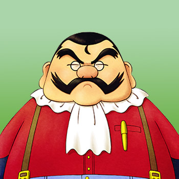

Este comerciante ambulante ofrece productos inusuales y animales simpáticos. Comenzará a visitar Mineral Town los miércoles después de que hayas arrojado al menos 30 regalos al estanque de la Diosa de la Cosecha. Van no participa en ningún festival ni evento aleatorio; él está allí para abrir su tienda y no mucho más.
En el juego original de GBA, Van solo parecía vender sus productos de los miércoles cuando los jugadores usaban el cable de enlace de GBA a Gamecube para comunicarse con su copia de Harvest Moon: A Wonderful Life para Gamecube. FoMT se conectaría a AWL para niños y MFoMT se conectaría a AWL para niñas. Después de conectar los dos juegos, Van aparecería en los juegos de GBA para vender el tocadiscos y los discos de música. En el juego de Gamecube, vendía música con temática de FoMT para el tocadiscos del juego.
| Cumpleaños |
(Ninguno) |
|---|
| Horario |
- Todos los miércoles fuera del festival, Van estará en el segundo piso de la posada de Dudley. Estará disponible hasta que la posada cierre a las 10:00 p. m. (o antes, dependiendo de tu nivel de amistad con Dudley).
- El día 15 de la temporada, si el clima está soleado afuera, Van instalará una tienda de mascotas en Rose Plaza de 12:00 pm a 6:00 pm.
- Si el día 15 también cae miércoles, Van comienza su día en la posada y luego aparece en la plaza al mediodía para cuidar el puesto de mascotas. A las 6:00 pm saldrá de la plaza y regresará al segundo piso de la posada para lo que resta del miércoles.
|
|---|
Preferencias de regalos
La mejor forma de mejorar la amistad con este aldeano es siempre regalar las cosas que le gusta una vez por dia.
|
- Mineral legendario
- Fósil Antiguo
- Perfume
- Diamante rosa
- Diamante
- Hilo X
- Tesoro Pirata
- Alejandrita
|
|
- Rosa del desierto
- Adamantita
- Aguamarina
- Esmeralda
- Amatista
- Fluorita
- Peridoto
- turquesa
- Topacio
- Granate
- Zafiro
- Ágata
- Rubí
- Jade
- Piña
- Lana (L, G, P, X) (C/A)
- Agua de uvas silvestres
- Chute de resistencia XL
- Chute de resistencia
- Queso (L, G, P, X)
- Hilo (M, L, G, P)
- Piedra de luna
- súper cafeína
- Leche (P, X)
- Oricalco
- Cafeína
- Mithril
- Cobre
- Plata
- Oro
- Golosina para mascotas
- Leche de frutas (P, X)
- Leche de fresa (P, X)
- Bloqueador solar
- Torta de fresa
- Mayonesa (X)
- Manzana SMDF
- Manzana HMMR
- Manzana UMSE
- Mascarilla
- Pendiente
- Pulsera
- Vestido
- Collar
- Broche
|
|
- Flor de juguete
- Flor de luna
- Bota de goma
- Lata vacía
- Forraje
- Rama
- Piedra Tomatosetta
- Carta en botella
- Hierba
- Madera
- Piedra
- Roca
- Alimento para pollos/conejos
- Espinas de pescado
- Flor de gato rosa
- Flor mágica azul
- Madera Dorada
|